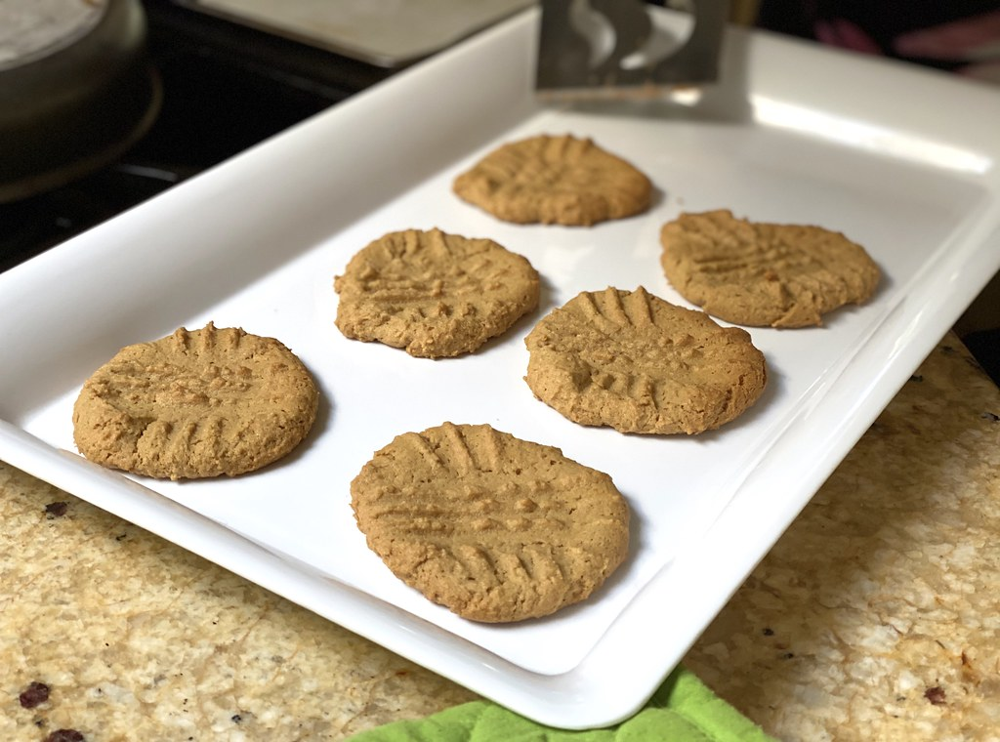

Peanut Butter Cookies Recipe

About Peanut Butter Cookies
These delicious cookies are also deliciously simple to make! With only three ingredients
and minimal equipment required, anyone can make this delicious treat! See below for how to make
peanut butter cookies.
How to Make Peanut Butter Cookies
Prep Time: 10 minutes
Makes: Approximately 2 dozen cookies
Ingredients
- 1 cup creamy peanut butter
- 1 cup white sugar
- 1 large egg
Instructions
- Prehead oven to 350 degrees F.
- Combine all ingredients in a bowl using an electric or stand mixer until smooth.
- Roll mixture into 1-inch balls and place on ungreased baking sheet.
- Flatten each ball with a fork in a crisscross pattern.
- Bake in the oven until the edges are crispy, about 10 minutes.
- Allow to cool completely, then serve and enjoy!
Return to Home